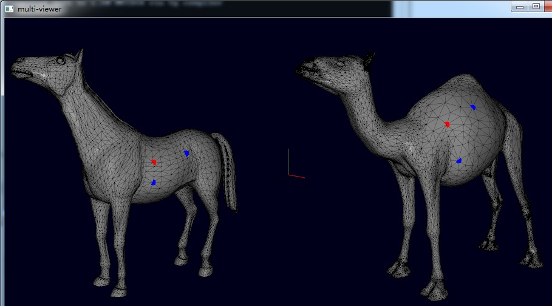
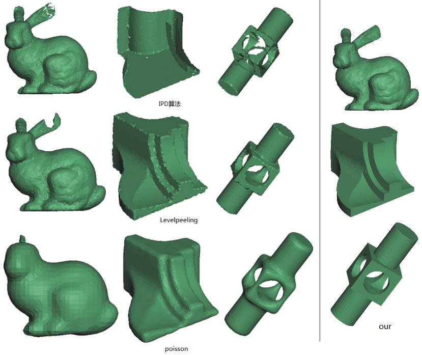
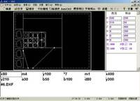
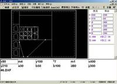
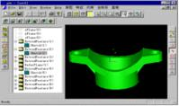

Implemantation of “Color Map Optimization for 3D Reconstruction with Consumer Depth Cameras” (2017.4.2)
download the program
ColorMap_Optimization_zip

Implementation of "An Intrinsic Coordinate System for 3D Face Registration" (2017.3)
download the program
3dFaceCCS.exe

detailes
Implementation of an old single image based facial modeling (2017.2)
download the program fitting_3dface.zip

Refer to: A morphable model for the synthesis of 3D faces. SIGGRAPH 99.
Design a vector field (2016.10)
implementation according to two papers:
"Design of 2D Time-Varying Vector Fields" and "Vector Field Design on Surfaces",you can download program at here . The source code is public available.

youtube视频
3d Register程序
download here

2010- 3D scanning and reconstruction、interactive system
下列项目纯属个人爱好的应用技术，无资金支持，也无发表论文必要
体感交互与隔空手写识别，董洪伟，4天基本完成. 2013.7.15-2013.7.18 .
通过手的动作可以无接触远距离操控电脑或智能电视中应用程序如画图、文本编辑浏览器等，通过识别隔空手写的文字可以无接触地远距离编写文档、浏览网页等
实时手势识别和虚拟书写系统,黄晓林, 2013
论文“基于深度相机的实时手势识别和虚拟书写系统”，计算机工程与应用,2014年已发表。结构光三维扫描系统，董洪伟. 2012.
线三维扫描系统，董洪伟. 2010.
2008-2009 Face modeling from images
We present a new technique for automatically creating highly detailed 3D facial models from images of a human face. The key idea of the image-based facial modeling process is to deform a template mesh model using color consistency metric defined by all input images. We formulate the image-based facial deformation as a continuous optimization problem. Our objective function ensures the deformed surface model not only matches the image measurement across all the input images but also keeps the fine details of the template model. We also employ an efficient gradient-based optimization technique to find an optimal facial model that precisely matches an individual face in input images. We demonstrate the performance of our algorithm by testing on both synthetic and real image data..
I also implemented the algorithm of paper "A morphable model for the synthesis of 3D faces" so that I could compare it with mine. My algorithm can get better result than its.


2008 网格变形 mesh deformation
I implemented a few papers when I was studying mesh deformation. I read papers about 2 months,then I spend a week to implement the first lapalcian based deforrmation ( paper 1)). In my spare tiem I implement 2) with a few hours and 3) about one day.But there results seems not good enough with the implemtentation of 3) due to the well generated deformation graph. Thanks Olga Sorkine for providing me those test models. My implementation of 3) is not real time which may be resulted from too many nodes in deformation graph.Any suggestions?
1). Lapalcian mesh deformation
2). Olga Sorkine and Marc Alexa. As-rigid-as-possible surface modeling. SGP 2007


The left is deformed with 1) ,right with 2).Download the program here
3). Embedded Deformation for Shape Manipulation . Robert W. Sumner, Johannes Schmid, Mark Pauly SIGGRAPH 2007.
Download the program EmbeddedDeformation.zip and the deformation graph code deformation_graph.zip
2005-2008 从散乱点重建三维曲面 3d surface reconstruction from point cloud
为健壮处理包含尖锐特征或欠采样的数据点集,通过对基于边界推进曲面重建技术的扩展,提出一种分片驱动的、特征敏感的对无方向散乱数据点集进行曲面重建的算法.在一个光滑阈值的控制下,将曲面重建过程分成分片重建和特征缝合2个阶段.在分片重建中,从光滑的种子三角化区域开始进行边界推进三角化,并通过拓扑元素分类与特征检测对边界光顺和特征重定位,以进一步扩展该分片,重复该过程,得到对光滑区域三角化的一系列光滑分片;特征缝合阶段,在边界推进过程中将所有分离的分片或分片中的缝隙缝合在特征区域.这种两阶段的三角化策略可有效地处理含尖锐特征或不规则采样如不充分采样的点集,无需保证拓扑完整性的复杂数学测试,如协变分析和三角形相交检测等,基于局部光滑曲面的求交,可有效地恢复采样点集丢失的特征信息.实验结果表明,采用文中算法能健壮处理不规则采样点集,并生成特征敏感的高质量网格.

分片驱动特征敏感的曲面重建过程

与IPD,Level Peeling和Poisson算法的比较
2007 网格分片（分割） mesh segmentaion
网格分割在网格参数化、纹理atlas图等几何处理问题中有着重要的应用。本文提出一种基于顶点或面凸凹信号的简单高效的网格分割算法。基于均匀支撑半径的顶点凸凹信号分析将顶点分为平坦点、凸点、凹点和特征点，该算法先从平坦点进行平坦区域扩展，再从剩下的凸凹点出发进行凸凹区域扩展，最后根据顶点和边界边的光滑度进行区域竞争扩展；对于未能完全分割的简化程度高的模型，基于面的凸凹信号采用类似的过程进一步完成最后的分割。该算法可以快速地进行网格分割并能较好地保持网格特征，特别适用于CAD模型的分割。

图1: Fandisk模型的基于凸凹信号扩展的分割过程：(a) 原始网格模型含6475个顶点，12946个三角形,(b) 顶点凸凹类型：以灰、黄、红、蓝颜色表示平坦点、特征点、凸点、凹点,(c) 平坦区域扩展 (d) 凸凹区域扩展 (e) 区域竞争扩展
2001-2006 玻璃切割 Glass Cutting system
 

1999-2000: 基于标识的特征造型(博士课题)
围绕参数化特征造型的拓扑元表标识和约束求解两个关键问题，设计了一种支持变量化设计的拓扑元素标识系统，对特征模型中的二维和三维几何元素进行统一标识，以唯一一致地标识模型发生前后的拓扑元素，同时设计和实现了基于该标识系统的参数化约束求解器，独立开发了一个集成上述两个关键技术的参数化特征造型原型系统。右图为参数化特征造型软件SolidWorks2000的标识系统的不合理编辑结果。


基于深度波尔兹曼机的蛋白质相互作用功能预测
《基因组学与应用生物学》，薛燕哪，董洪伟，2015.7